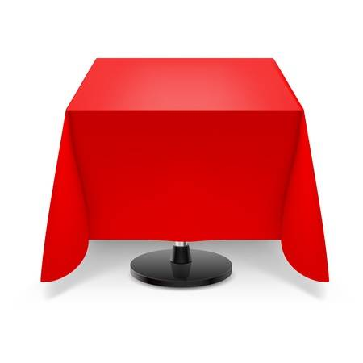

Pulsa para escanear el QR
Para poder solicitar una mesa, primero ponte en la lista de espera escanenado el codigo QR en la entrada de nuestro resturante y aguarda la confirmacion de nuestro metre
Para poder solicitar una mesa, primero ponte en la lista de espera escanenado el codigo QR en la entrada de nuestro resturante y aguarda la confirmacion de nuestro metre

¡Ya estas en cola pasa solicitar una mesa! solo espera a que el metre te habilite para poder entrar y elegir el lugar que mas te guste!

¡Ya estas listo para sentarte! simplemente acércate a la mesa que mas te guste y escaneala, recuerda que si la mesa ya esta ocupada no podra ser tuya...
As escaneado la mesa Nº{{usuario.mesa}}, ahora que tienes tu mesa, ya puedes hacer pedidos en la pestaña Hacer pedidos